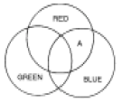
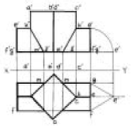
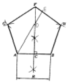
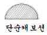
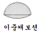
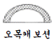
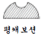

귀금속가공기능사 (2005-07-17 기출문제)
1과목: 공예디자인
1. 다음 배색 중 명시도가 가장 높은 배색은?
- 녹색 바탕에 흰색
- 흰색 바탕에 검정색
- 검정 바탕에 노랑색
- 검정 바탕에 흰색
(정답률: 88%)

2. 색의 감정적 효과에서 중량감에 가장 큰 영향을 미치는 것은?
- 채도
- 명도
- 색상
- 대비
(정답률: 89%)
3. 다음 중 극단적으로 어느 한 쪽에 치우칠 때 단조롭고 무미건조하거나, 또는 혼란과 무질서를 초래하게 되는 디자인 원리는?
- 대칭과 비대칭
- 주도와 종속
- 통일과 변화
- 비례와 대비
(정답률: 59%)
4. 지시선을 사용하지 않는 곳은?
- 가공법
- 반지름
- 구멍의 치수
- 부품번호
(정답률: 51%)
5. 다음 중 신라 시대에 가장 발달하였던 공예는?
- 칠공예
- 목공예
- 도자기 공예
- 금속공예
(정답률: 82%)
6. 투시도법에 관한 설명 중 잘못된 것은?
- 원근감이 있다.
- 시점에서 멀수록 작게 표현된다.
- 치수가 정확히 표현된다.
- 입체감이 있다.
(정답률: 81%)
7. 다음 색광혼합의 그림에서 A부분의 색은?

- White
- Cyan
- Yellow
- Magenta
(정답률: 90%)
8. 황금분할비례의 설명으로 틀린 것은?
- 길이의 비가 1 : 1.816 이다.
- 종교적인 신비로운 미의 법칙
- 통일과 변화를 얻을 수 있는 구성원리
- 조각, 건축조형에 응용된다.
(정답률: 75%)
9. 구성의 요소가 규칙적으로 점점 변화해 가는 상태 즉, 계측적인 변화로서 요소의 증대, 혹은 감소의 두 방향성을 가지는 리듬은?
- 점증의 리듬
- 기하학적 리듬
- 되풀이 리듬
- 자유로운 리듬
(정답률: 75%)
10. 다음 중에서 가장 맑고 깨끗한 색은?
- 탁색
- 원색
- 암색
- 명색
(정답률: 76%)
11. 해칭선은 어떤 선을 사용하는가?
- 굵은 실선
- 가는 실선
- 가는 일점쇄선
- 굵은 일점쇄선
(정답률: 79%)
12. 다음 그림과 같은 투상도의 내용은?

- 정사각 기둥의 투상을 나타낸 것이다.
- 사각형을 기울어지게 절단한 것이다.
- 정삼각 기둥과 정사각 기둥의 상관체의 투상이다.
- 정사각형의 단면을 나타낸 투상이다.
(정답률: 85%)
13. 신예술을 의미하는 뜻으로 덩쿨이나 나무잎을 연상하는 유동적 선에 의해 환상적 구도를 시도한 예술은?
- 쎄쎄션(Sezession)
- 아트 앤드 크라프트(Art and crafts)
- 아르누보(Art Nouveau)
- 바우하우스(Bauhause)
(정답률: 86%)
14. 빨간 쟁반 위에 놓인 귤(Orange)이 녹색(Green)기를 띄어 보이는 현상은?
- 채도대비
- 면적대비
- 색상대비
- 보색대비
(정답률: 64%)
15. 병치혼합에 관한 설명 중 올바른 것은?
- 색을 인접시키고 떨어져서 보는 것으로 평균 명도의 중간색을 얻는 혼합이다.
- 색팽이를 회전시켜 색의 평균명도를 얻는 혼합이다.
- 색유리를 통한 스크린의 혼합이다.
- 색상환에서 반대색끼리의 혼합이다.
(정답률: 70%)
16. 주어진 길이(R)를 1변으로 하는 정5각형 작도에서 길이DE를 옳게 나타낸 것은?

- DE =1/2AB
- DE = AB
- DE =1/2AD
- DE = AD
(정답률: 59%)
17. 다음 설명 중 등각 투상법은?
- 투상면에 대해 기울어진 평행광선에 의해서 투상하여 입체적인 물체를 나타내는 것이다.
- 물체를 본 시선이 화면과 만나는 각 점을 연결하여 실제 모양과 같게 그리는 것이다.
- 인접한 두 면이 각각 화면과 기면에 평행한 그림을 말한다.
- 정면, 평면, 측면을 하나의 투상면 위에서 동시에 볼수 있도록 그린 것이다.
(정답률: 57%)
18. 산업안전표시 가운데 안전위생지도 표지판을 제작할 때 여기에 칠하는 적당한 색은?
- 흰색 바탕에 녹색
- 녹색 바탕에 노랑
- 노랑 바탕에 검정
- 흰색 바탕에 빨강
(정답률: 83%)
19. 다음 그림과 같은 문양은?
- 국당초
- 모란당초
- 연당초
- 인동당초
(정답률: 65%)
20. 다음에서 유사색 조화를 이루고 있는 것은?
- 빨강, 파랑
- 감청, 주황
- 연두, 녹색
- 노랑, 남색
(정답률: 94%)
2과목: 귀금속재료
21. 다음 중 형태변화의 조건과 가장 거리가 먼 것은?
- 보는 방향에 따라 달라진다.
- 명암에 따라 달라진다.
- 눈의 높이에 따라 달라진다.
- 원근에 따라 달라진다.
(정답률: 84%)
22. 다음 도면의 종류 중 용도에 따른 분류가 아닌 것은?
- 계획도
- 조립도
- 설명도
- 주문도
(정답률: 57%)
23. 팔라듐(palladium)의 비중은?
- 12.03
- 8.96
- 7.298
- 7.133
(정답률: 78%)
24. 다음 보기 중 칠보의 바탕 금속으로 사용하기 가장 적합한 금속재료는?
- 로우 브라스(low brass)
- 6 : 4 황동
- 톰백
- 길딩 메탈
(정답률: 73%)
25. 은도금에서 하지도금(下地鍍金)을 하지 않고 직접 도금이 가능한 금속은?
- 철
- 니켈
- 구리
- 주석
(정답률: 63%)
26. 청동(Bronze)의 설명 중 틀린 것은?
- 주조에 대한 유동성이 좋다.
- 주조시 수축율이 적다.
- 가공성이 아주 좋다.
- 내식성이 강하다.
(정답률: 48%)
27. 다이아몬드의 가격을 평가하는 요소로 맞지 않는 것은?
- 색
- 커트
- 경도
- 중량
(정답률: 86%)
28. 칠보의 잘못된 부분을 떼어낼 때 사용하는 약품은?
- 유산
- 염화제이철
- 신너
- 불산
(정답률: 66%)
29. 구리와 아연의 합금으로 강도는 그리 높지 않으나 점성이 강하며 주조가공을 하기 쉬운 금속은?
- 황동
- 청동
- 백동
- 규소동
(정답률: 65%)
30. 일반적인 장신구용으로 은(Ag)의 합금 비율이 가장 이상적인 것은?
- 70%
- 75%
- 82.5%
- 92.5%
(정답률: 92%)
31. 다음 금속과 용융온도가 잘못 연결된 것은?
- Pb - 327.4℃
- Zn - 650℃
- Al - 660.2℃
- Cu - 1083℃
(정답률: 45%)
32. 일명 저먼실버(german-silver)라고 불리우며 구리와 아연, 니켈의 합금인 것은?
- 톰백
- 양은
- 청동
- 7.3 황동
(정답률: 73%)
33. 루비와 같은 결정계를 갖는 육방정계의 보석은?
- 가넷
- 스피넬
- 사파이어
- 다이아몬드
(정답률: 71%)
34. 귀금속 선재를 뽑을 때 많이 사용하는 윤활재는?
- 모빌유
- 석유
- 경유
- 파라핀
(정답률: 90%)
35. 금속의 광택용인 청봉(green rouge)의 주성분은?
- 산화철(Fe2O3)
- 산화크롬(Cr2O3)
- 염화제이수은(HgCl2)
- 염화암모늄(NH4Cl)
(정답률: 79%)
36. 순금을 분석하려고 할 때 사용되는 용액은?
- 질산
- 왕수
- 염산
- 유산
(정답률: 83%)
37. 다음 중 18K 금땜의 합금비율이 맞는 것은?
- 금 75%, 구리 5 ~ 15%, 은 10 ~ 20%
- 금 63%, 구리 15%, 은 22%
- 금 58%, 구리 14 ~ 28%, 은 4 ~ 28%
- 금 55%, 구리 14%, 은 31%
(정답률: 87%)
38. 다음 중 캐보션의 명칭이 잘못 표기된 것은?




(정답률: 95%)
39. 열전도가 보통 금속에서 가장 높고, 전기 전도는 은 다음으로 우수하며 금, 은의 합금에 사용되는 비철금속은?
- 철(Fe)
- 구리(Cu)
- 아연(Zn)
- 납(Pb)
(정답률: 78%)
40. 화이트골드에 관한 설명 중 틀린 것은?
- 천연금이 아닌 합금이다.
- 백금족 금속이다.
- 백색금이라고 부른다.
- 백금 대용으로 사용하기도 한다.
(정답률: 80%)
3과목: 귀금속가공
41. 서로 색상이 다르고 땜이 용이한 금속끼리 문양 및 색상대비효과를 주는 상감기법은?
- 절상감
- 오동상감
- 면상감
- 선상감
(정답률: 66%)
42. 드로잉 집게를 사용하는 작업은?
- 벼림질
- 선재뽑기
- 주조집게
- 융해집게
(정답률: 87%)
43. 전기를 사용하는 공구 및 기계의 작업상 전기의 안전관리에 맞지 않는 것은?
- 작업의 능률과 효율성을 높이기 위해 전원은 항시 연결해 놓는다.
- 시업점검과 종업점검을 자주 한다.
- 돌발적 사태의 방지를 위해 임시점검을 자주 한다.
- 전기는 항상 일일점검을 한다.
(정답률: 98%)
44. 단조작업시 주의 사항이 아닌 것은?
- 자주 열풀림하여 작업하지 않으면 균열이 생긴다.
- 모루의 표면바닥이 녹이 슬었거나 촛농 등의 불순물이 묻어 있는 정도는 작업에 지장을 주지 않는다.
- 벼림질 도중 일감이 튀지 않도록 벼림집게로 단단히 잡는다.
- 모루 위에 깨진 접시 도가니를 곱게 가루를 만들어 뿌리고 그 위에서 작업을 하면 용이하다.
(정답률: 82%)
45. 가스토치에서 일어나는 역류, 역화, 인화 현상 중 역화의 원인은?
- 고압의 산소가 밖으로 배출되지 못할 때
- 팁의 과열, 팁죔의 불량, 사용가스의 압력이 부적당할 때
- 불꽃이 토치의 가스 혼합실까지 도달되어 토치가 빨갛게 달구어질 때
- 벤투리와 노즐 끝과의 사이가 막힐 때
(정답률: 65%)
46. 탭과 다이스는 어떤 작업을 하기 위한 공구인가?
- 구멍작업
- 나사작업
- 절삭작업
- 연마작업
(정답률: 76%)
47. 다음 중 경흉식(목걸이)에 대한 설명으로 틀린 것은?
- 고구려의 것은 장엄하며 벽화 등에서 찾아 볼 수 있다.
- 백제 목걸이는 마한 시대부터 주옥류가 있었다.
- 신라의 금제경식은 속이 비어 있는 중공투작구체 이다.
- 신라 상감유리옥 경식의 유리옥에는 인물상의 두상이 표현되어 있다.
(정답률: 83%)
48. 다음 세공 공구 중 쓰임새가 다른 하나는?
- 버니어 캘리퍼스
- 링 게이지
- 광쇠
- 지환봉
(정답률: 86%)
49. 보석연마 방법 중 패싯(facet)연마에 속하지 않는 것은?
- 브릴리언트
- 스텝 컷
- 인탈리오
- 혼합 컷
(정답률: 61%)
50. 정밀주조 작업시 가장 대표적인 장점에 해당되는 것은?
- 일품생산
- 재료절약
- 품질향상
- 대량생산
(정답률: 77%)
51. 시안화나트륨(NaCN)과 과산화수소(H2O2)를 이용한 스트리핑(stripping) 작업시 주의사항 중 잘못된 것은?
- 용기는 가급적 주둥이가 좁은 것을 사용한다.
- 서로 다른 금속은 분리해서 작업한다.
- 스트리핑 후 용액은 분리 폐기시켜야 한다.
- 환기가 잘 되는 곳에서 작업을 해야 해가 없다.
(정답률: 86%)
52. 감탕 용융 온도로 알맞은 것은?
- 50∼100℃
- 100∼150℃
- 150∼200℃
- 200∼250℃
(정답률: 74%)
53. 다음 문양과 형태에 대한 설명 중 틀린 것은?
- 인동문은 덩굴이 뻗어 나가는 형상의 무늬이다.
- 곡옥은 맹수의 이빨 등 자연물에서 연원(淵源)되었다고 본다.
- 신조(神鳥), 천조(天鳥)는 태양의 상징으로 천조사상을 나타낸다.
- 봉황의 의미는 장생의 상징이다.
(정답률: 66%)
54. 다음 귀금속 가공기법 중 가장 마지막에 해야 할 작업은?
- 줄 작업
- 압연 작업
- 실톱 작업
- 갈기 작업
(정답률: 86%)
55. 정밀주조 작업 과정 중 매몰재와 물의 일반적인 혼합비율은?
- 매몰재 100 : 물 20
- 매몰재 100 : 물 40
- 매몰재 100 : 물 60
- 매몰재 100 : 물 70
(정답률: 84%)
56. 가스 용접에 쓰이는 수소가스의 성질이 아닌 것은?
- 무색, 무미, 무취이며 인체에 해가 없다.
- 온도 0℃, 1 기압일 때 물질 중 가장 가볍다.
- 확산 속도가 느리고, 작은 구멍이나 틈으로 외부에 누설이 잘 안된다.
- 산소와 화합이 쉽고, 연소시 2000℃이상의 온도를 얻을수 있다.
(정답률: 70%)
57. 다음 평면 줄질 방법 중 '병진법' 이란?
- 가늘고 긴 공작면을 한쪽 눈으로 평면여부를 검사하여 줄질할 때 사용하는 방법
- 줄의 길이 방향으로 줄질하는 것으로 최종의 다듬질에 이용되는 방법
- 절삭량이 많은 거친 줄에 적합한 방법
- 줄을 우측 전방으로 줄질하는 방법
(정답률: 64%)
58. 금속 가공용 약품 취급에 관한 설명 중 잘못된 것은?
- 황산을 희석할 때는 물에다 황산을 서서히 붓는다.
- 산을 취급할 때는 전문 교육을 받은 자가 취급한다.
- 산은 유리·플라스틱·금속재 그릇 등에 보관한다.
- 취급상 주의점을 적어두고 어린이 손에 닿지 않는 곳에 보관한다.
(정답률: 89%)
59. 초음파 세척기의 사용방법이 잘못된 것은?
- 세척조에 약 2/3 정도의 물을 채운다.
- 중성세제를 약 10 ~ 30ml 섞는다.
- 물은 약 60 ~ 70°C 의 온도를 유지한다.
- 세척조의 바닥에 일감이 수평으로 닿도록 한다.
(정답률: 79%)
60. 복잡하고 섬세한 형태의 은제 장신구를 제작하려고 할 때은 땜을 하는 순서가 옳은 것은?
- 약땜 - 중땜 - 강땜
- 강땜 - 중땜 - 약땜
- 중땜 - 강땜 - 약땜
- 약땜 - 중땜 - 약땜
(정답률: 89%)